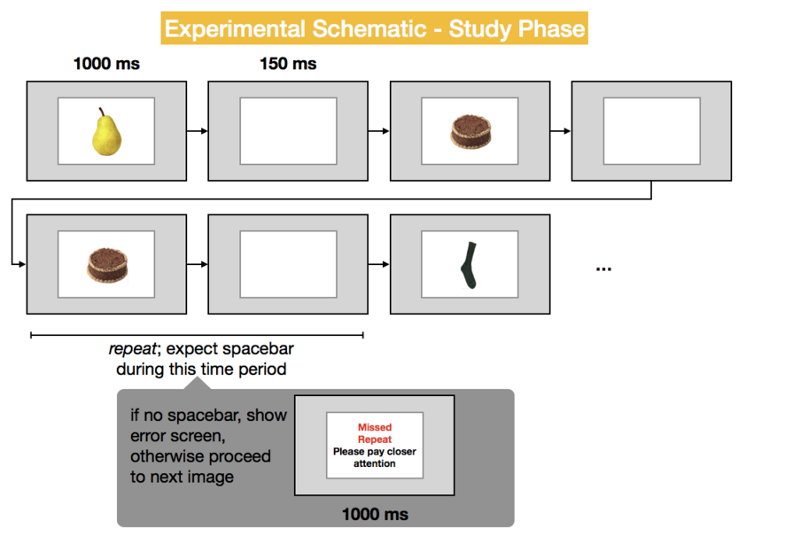
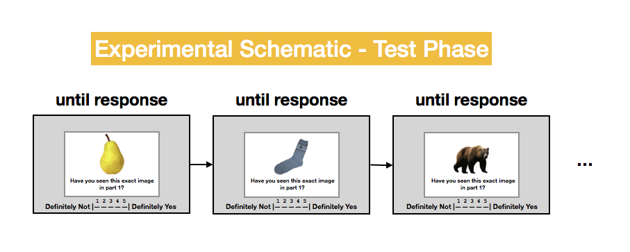
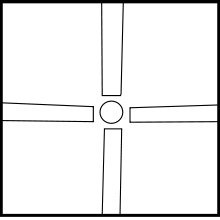
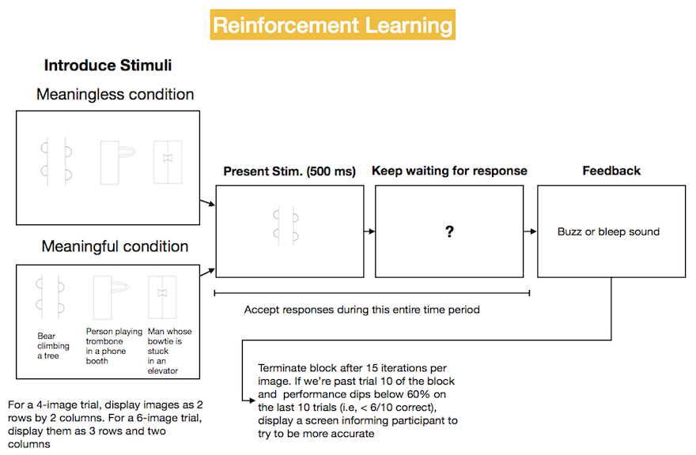

Project 1
Contents
Project 1#
Please make sure to sign in to the project repository as a team rather than just cloning it to your computer. See #project1 channel in Slack for the invite link.
Option 1 - Visual Recognition Memory and Verbal Lures#
The first option is to implement a visual recognition memory experiment. As with most of such studies, the experiment will have two parts: study and test. In the study part, participants see a sequence of images. To maintain attention, they perform a 1-back task, pressing the spacebar anytime they detect an image repeating back-to-back. During the test session which will immediately follow the study, participants see each image and perform an old/new recognition task.
This experiment will test the hypothesis that although both study and test materials are images, participants will show significantly higher false-alarms on rhyme (e.g., rake/cake, bear/pear) and homonym trials, e.g., (bat [the animal], bat [baseball bat], flour/flower).
The precise stimuli will be available shortly. In the meantime, here is a schematic so you can start thinking about how you should design the trial list.
Things to keep in mind#
The repeated images are filler trials and are not included in the test.
Half the test trials should be ‘new’ (correct response: new) and half ‘old’.
Study phase details#
During the study phase, participants will see a total of 180 images; 20 of these should be repeats. That is, on a given trial, there is an ~11% likelihood (20/180) that participants will need to press the spacebar to indicate that it’s a repeat. Repeats should never occur back-to-back and should not be in the first 5 trials of the study session and should not include any of the “special” stims (i.e., stims that are homonyms or rhymes).
How do you know which stims are special? They are the ones listed in the first two columns of stimulus_info.csv in the project repository. For simplicity, I extracted these into a file called special_stims.txt (also in your repository). The “non-special” stims are all the ones in the stimulis/visual directory that are not in the special stims.
As indicated in the schematic below, participants should see a 1000 ms feedback screen if they miss a repeat. If they respond correctly or if they false alarm (thought they saw a repeat when in fact there wasn’t one), no feedback should be shown. The sutdy part should begin with an instruction screen and end with a scren alerting them that they will now go on to the second part of the experiment.
There should be no user-controlled breaks in the study session.

Test phase details#
During the test phase, participants will see a total of 100 images. Half (50) are exact matches from part 1. The remaining half are “new”. The new trials are broken up into four types:
Rhymes (e.g., if the study part included a pear, this type of lure is a bear) - 12
Homonyms (trunk/trunk) and homophones (flour/flower) - 8 of these
Lures with similar spellings as study items - 6 of these
New exemplars (e.g., if they saw accordion_1 at study; they would see accordion_2 at test) - 24 of these
You don’t need to figure out which items are the homonums, spelling-lures etc. All of this information is in stimulus_info.csv.
Across participants, there should be counterbalancing, so that for exemplar, rhyming, and homonym pairs, some people get one image in the pair at study, while other participnts get a different one. E.g., some people see “pear” at study and “bear” at test. Others see “bear” at study and “pear” at test. This should not be left to chance, but rather determined by the runtime variable whichSet. By seeding the random number generator with the same value for pairs of participants, you’ll be able to run pairs people on the same experiment except one will have seen bear at study, and the other pear at study.
Note that each category should be tested only once. If participants see “bear” at study and “pear” at test, they should not also see a different exemplar of a bear at test.
There should be no user-controlled breaks in the test session.
There is no accuracy feedback in the test session.

Output file details#
For each participant, write two output files: one for study; one for test.
For the study session, the output should include:
Subject code
Experiment code
Random seed
Any counterbalancing variable(s)
Trial number
Image category (e.g., bear)
Is this image part of an exemplar trial, rhyme trial, homonym trial, or unrelated trial?
Image filename (e.g., bear4.jpg)
Repeat or not
Response (if any)
Correct (1) or not (0)
Reaction time in milliseconds or NA if no response is received
For the test session, the output should include:
Subject code
Experiment code
Random seed
Any counterbalancing variable(s)
Trial number
Image category (e.g., bear)
Image filename (e.g., bear4.jpg)
Old or new trial type
What type of new trial (unrelated; exemplar; rhyme; homonym)
Response (1-5)
Correct (1) or not (0). Correct if 1-2 for old or 4-5 for new, else incorrect.
Reaction time in milliseconds
Option 2: Reinforcement learning and meaningfulness#
Quick, what’s this? 
…why that’s four elephants smelling an orange of course!
What is the consequence of ascribing meaning to an underdetermined image? In this experiment, we will examine whether ascribing meaning helps people associate images with arbitrary responses.

The experiment consists of several blocks. Each block begins with a display of all the stimuli (3 in the schematic above). Each of these is assigned to one of three keys (‘z’, ‘x’, ‘c’) with replacement such that two images may be assigned to the same key. Participants then see these images and try to learn which key each image goes with, receiving accuracy feedback after every trial. Once the termination condition shown above is met, a new block begins which contains several novel items.
The only difference between the meaningful and meaningless conditions is that in the meaningful condition, the screen that introduces the stimuli contains a verbal description of each one.
By seeding the random number generator with the same value for pairs of participants, you’ll be able to run pairs people on the identical trial sequence, except one will be in the description condition and the other in the no-description condition.
An example of the trials file can be found in testSubj1_trials.csv.
To create the display of all stimuli presented in a block, you might want to introduce some logic like this:
for curTrial in trialInfo:
if curTrial['trialIndex'] == '0': # First trial in block
# Scans through all trials in the trialInfo list
# looking for any trials in the current block.
stim_names_descriptions={trial['stim']: trial['description']
for trial in trialInfo
if trial['block'] == curTrial['block']}
# ...
Stimulus details#
Please get the Droodle stimuli and descriptions by cloning the programming for psychologists repository. Descriptions of the Droodle stimuli are located in the trial_info.csv file in the project 1 repository. These stimuli come from Nishimoto, Ueda, Miyawaki, & Une (2010)
Output file details#
For the test session, the output should include the following information:
Subject code
Experiment code
Condition (meaningful/meaningless)
Random seed
Any counterbalancing variable(s)
Block number
Trial number
Image name/category (e.g., R15)
Response assigned to the image (z-x-c)
Response received (‘z’, ‘x’, ‘c’)
Maximum number of images assigned to a single key in current block
Was the response correct (1) or not (0).
Reaction time in milliseconds (measured from image onset)